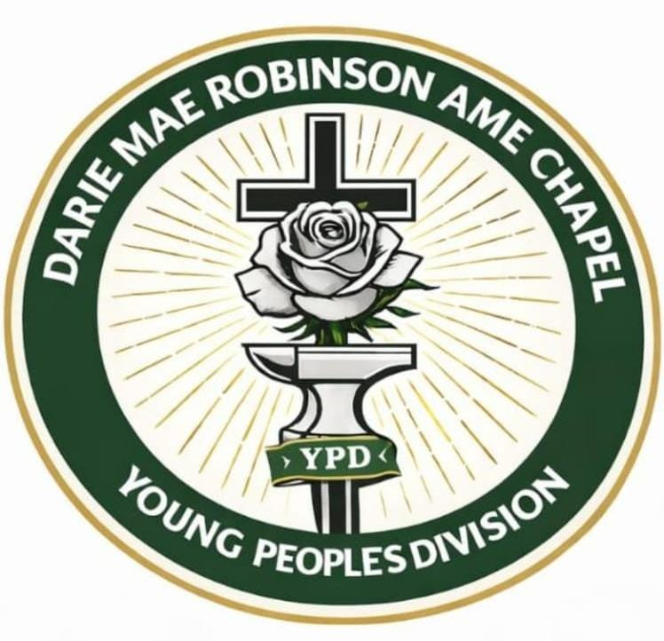
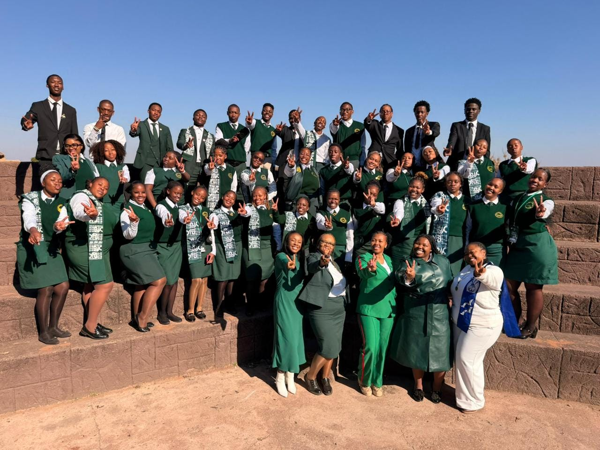

DMR YPD is more than just a youth organisation. It's a family, a community, and a place to grow! Here, young people can connect, have fun, discover their purpose, grow in faith, and build meaningful friendships. From exciting youth programmes and fellowship to community service and leadership opportunities, DMR YPD creates a space where every young person can feel seen, valued, and empowered. Together, we grow in faith, serve with love, and make an impact that matters!
©Darie Mae Robinson Young People's and Children's Division. All rights reserved. 2026